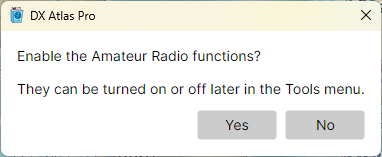

Quick Start
First Start
When DX Atlas Pro starts for the first time, it asks whether to enable the Amateur Radio functions:

- answer Yes to show the DXCC entities, zones, award tracking, ionospheric maps and propagation prediction;
- answer No to use the program as a general-purpose world atlas.
The answer is not final: Tools > Amateur Radio Functions turns the functions on and off at any time. See The Amateur Radio Switch.
Setting the Home Location
The home location is your own location on the globe. It is marked on both maps, the distances and bearings in the status bar are measured from it, the Clock panel shows its sunrise and sunset, and the azimuthal map is centred on it.
To set it, do one of the following:
- right-click your location on the map and pick Set Home Location Here, then confirm the coordinates in the message box;
- open Tools > Settings, and enter your latitude and longitude, or your Maidenhead grid square, in the Home Location section.
See Home Location.
Finding Your Way Around
- drag the map with the left mouse button to pan it, and turn the mouse wheel to zoom in and out;
- click the Projection button at the left end of the map toolbar to switch between the rectangular map, the azimuthal map and the globe;
- click the Layers, Lines and Labels buttons to choose what the map shows;
- hover the mouse over a label to see its tooltip, and right-click the map for a menu of what you can do at that point;
- type a name in the Search box of the Lists panel, then double-click a row to find that item on the map.
The rest of this guide describes each of these in detail. Window Layout explains the panels of the main window.